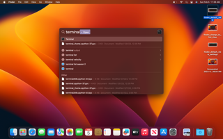

Step 1: How to brute force the Wifi password
In this lab, we will brute force the wifi credential of the hotspot.
- [ ] Find the wifi network
- [ ] Manually guess some passwords
- [ ] Find a dictionary
- [ ] Find a command to use to connect to wifi networks
- [ ] Figure out how to push the passwords from the dictionary file into the wifi connection command
- [ ] Launch the attack and Discover the credential
BEFORE YOU START
- Make sure you have downloaded and installed the firmware onto an SDCard and installed the SDCard into your pi .
- Make sure that when you power up the pi, you see a solid red power light and occasional blinking green lights.
- Make sure you have both a mobile phone and a Mac laptop. DO NOT PERFORM THIS WORK ON A CORPORATE OR MANAGED LAPTOP. As we work through future labs, you will use tools that might get flagged as “hacking tools” by device management teams. You should only perform this work on a computer you own.
Discoverying the Wifi Network
The Raspberry Pi will operate as a wifi access point that you can practice hacking against. About a minute after it is powered on, it will broadcast a wifi network with the name üåπ‚ò†Ô∏èüåπ. You should find it from your mobile phone. If you are using an iOS device, it would be under settings->wifi.
| settings | wifi |
|---|---|
- [x] Find the wifi network
- [ ] Manually guess some passwords
- [ ] Find a dictionary
- [ ] Find a command to use to connect to wifi networks
- [ ] Figure out how to push the passwords from the dictionary file into the wifi connection command
- [ ] Launch the attack and Discover the credential
Manually guessing a password
The üåπ‚ò†Ô∏èüåπ network is the one we’ll be targeting. So now you can try guessing some passwords if you’d like. You should find that unless you’re really lucky, you won’t be able to guess it. You might want to read this post on password strength for an understanding of just how many possible passwords could be used on the device. Password guessing is not a good strategy- and neither is raw brute forcing, but perhaps there’s an in-between approach.
People generally prefer to use passwords that are Memorable. If you can’t remember your password, you can’t prove that you’re the person who should be allowed to access the device. Since people generally use memorable passwords, it stands to reason that the set of possible “memorable” passwords is significantly smaller than the total set of possible passwords. If someone had a list of commonly used passwords, they might be able to speed up the process by trying those first before resorting to brute force.
- [x] Find the wifi network
- [x] Manually guess some passwords
- [ ] Find a dictionary
- [ ] Find a command to use to connect to wifi networks
- [ ] Figure out how to push the passwords from the dictionary file into the wifi connection command
- [ ] Launch the attack and Discover the credential
Finding a Dictionary
Let’s try to find a common password list. You can do this by searching google for the following phrase:
“10k most common passwords”
you should see a link to a github repository show up that’s at the following url:
Browse to the page. Click on the button labeled “raw” on the right side of the page. You can then save this file to your computer by clicking on the file menu for the browser and selecting “save as.”
When you click on Save as, a dialog will show up:
You’ll need to create a directory for starting our hacking. You can do this from within the dialog by clicking on New Folder. Name it HackingLab and click Create.
Then go ahead and click on save. You’ll now have a file called “10k-most-common.txt” in the Hacking lab direcotry. Let’s learn to view the file from the command line. Let’s use spotlight to open up the terminal by hitting command and space simultaneously, and then typing in terminal:

Change into your HackingLab directory by typing the following:
cd HackingLab
Now that you’re in the HackingLab directory, let’s view the password file:
more 10k-most-common.txt
You’ll see that each row of the file contains a password.
Hit q to leave the more command.
- [x] Find the wifi network
- [x] Manually guess some passwords
- [x] Find a dictionary
- [ ] Find a command to use to connect to wifi networks
- [ ] Figure out how to push the passwords from the dictionary file into the wifi connection command
- [ ] Launch the attack and Discover the credential
Finding a command to use to connect to wifi networks
We’ve got some passwords- now we need to figure out how to automate the connection attempts. Let’s do some google searching for “Connect to wifi from command line mac.”
I found a posting here: https://sharmank.medium.com/how-to-connect-to-wifi-using-mac-os-command-line-3a76c2e6669c
In it, they show two interesting commands:
/System/Library/PrivateFrameworks/Apple80211.framework/Versions/Current/Resources/airport -s
and
networksetup -setairportnetwork en0 <SSID_OF_NETWORK> <PASSWORD>
Try running the first command (airport -s) from your mac. On my machine, I find the command is sometimes unreliable and I need to run it multiple times, as you can see below:
In this command, you see a list of all the local wifi networks. So we can confirm we see our target hacking environment.
Now we need to explore this networksetup command. If you copy and paste it raw, you’ll get an error, because it is expecting you to insert the ssid and the password into the command. So if we wanted to try a single password against the device, we’d need to do something like the following:
networksetup -setairportnetwork en0 üåπ‚ò†Ô∏èüåπ somepassword
(You can get an emoji keyboard by hitting the control+command+space keys simultaneously, and then you can search for skull or rose by typing in “rose” in the keyboard search:
When you run this command, you’ll see that your wifi network will disconnect temporarily, and then there will be an error if you guessed the wrong password. Alright- we found a command that can be used to connect to wifi networks- now we need to combine it with wour password list.
- [x] Find the wifi network
- [x] Manually guess some passwords
- [x] Find a dictionary
- [x] Find a command to use to connect to wifi networks
- [ ] Figure out how to push the passwords from the dictionary file into the wifi connection command
- [ ] Launch the attack and Discover the credential
Pushing passwords from dictionary file into the wifi connection cammand:
Next, we’re going to do a little bash magic.
At the terminal, type the following lines in and hit enter at the end of each line:
while read passwordfilevalue; do
networksetup -setairportnetwork en0 üåπ‚ò†Ô∏èüåπ “$passwordfilevalue”
ifconfig en0 | grep inet
echo $passworfilevalue
done < 10k-most-common.txt
- [x] Manually guess some passwords
- [x] Find a dictionary
- [x] Find a command to use to connect to wifi networks
- [x] Figure out how to push the passwords from the dictionary file into the wifi connection command
- [x] Launch the attack and Discover the credential
- [ ] Discovering the credential
| settings | wifi |
|---|---|
while read passwordfilevalue; do |
We’re going to write a “while” loop that will open the password list one row at a time. |
networksetup -setairportnetwork en0 üåπ‚ò†Ô∏èüåπ "$passwordfilevalue" |
pass the word that’s in the current row into a shell variable called passwordfilevalue. |
| ``` ifconfig en0 | grep inet ``` |
echo $passworfilevalue |
Finally, we print out the password value that was used during the loop so we can see what password was tried. |
done < 10k-most-common.txt |
Finally, we echo out the password value that was used during the loop so we can see what password was tried. |
So if we see an inet value return, we can see the password that worked. In the gif below, you’ll see a password which is not the password used on the full build, so you still have to go through the process yourself to hack the network. üòé
- [x] Manually guess some passwords
- [x] Find a dictionary
- [x] Find a command to use to connect to wifi networks
- [x] Figure out how to push the passwords from the dictionary file into the wifi connection command
- [x] Launch the attack and Discover the credential

When you’ve made it on to the wifi network, you’re ready to start working through the challenges outlined in the challenges file.